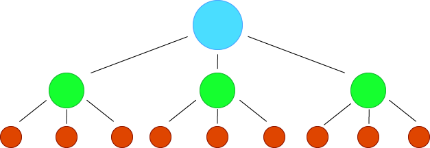

Random Forest Models are Machine Learning algorithms that use
decision trees to make predictions. Each tree is trained with
different data, which are then combined by the model. This can
help improve warning systems, which in turn help with disaster
preparedness and resource allocations. It also helps reduce
long-term damage because of the knowlegde of estimated
magnitudes. Understanding the magnitude can
also help prepare for other natural disasters
caused by earthquakes.
Here, the model uses the latitude, longitude and
depth of previous earthquakes to make magnitude
predictions. It can also use specific coordinates
to predict the magnitude of a potential earthquake
in a specific area based on coordinates.
